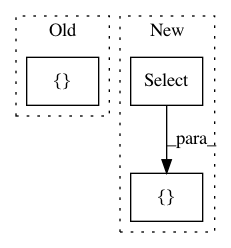

99c2a50bf0b70732aa6c0aae9b74db0969ff4f6f,src/python/pants/engine/build_files.py,,create_graph_rules,#Any#Any#,346
Before Change
:param symbol_table: A SymbolTable instance to provide symbols for Address lookups.
symbol_table_constraint = symbol_table.constraint()
return [
TaskRule(BuildFilesCollection,
[SelectDependencies(BuildFiles, BuildDirs, field_types=(Dir,))],
BuildFilesCollection),
// A singleton to provide the AddressMapper.
SingletonRule(AddressMapper, address_mapper),
// Support for resolving Structs from Addresses.
TaskRule(
symbol_table_constraint,
[Select(AddressMapper),
Select(UnhydratedStruct),
SelectDependencies(symbol_table_constraint, UnhydratedStruct, field_types=(Address,))],
hydrate_struct
),
resolve_unhydrated_struct,
// BUILD file parsing.
parse_address_family,
build_files,
buildfile_path_globs_for_dir,
// Spec handling: locate directories that contain build files, and request
// AddressFamilies for each of them.
addresses_from_address_families,
filter_build_dirs,
spec_to_globs,
// Root rules representing parameters that might be provided via root subjects.
RootRule(Address),
RootRule(BuildFileAddress),
RootRule(BuildFileAddresses),
RootRule(Specs),
]
After Change
:param symbol_table: A SymbolTable instance to provide symbols for Address lookups.
symbol_table_constraint = symbol_table.constraint()
return [
// A singleton to provide the AddressMapper.
SingletonRule(AddressMapper, address_mapper),
// Support for resolving Structs from Addresses.
TaskRule(
symbol_table_constraint,
[Select(AddressMapper),
Select(UnhydratedStruct),
SelectDependencies(symbol_table_constraint, UnhydratedStruct, field_types=(Address,))],
hydrate_struct
),
resolve_unhydrated_struct,
// BUILD file parsing.
parse_address_family,
// Spec handling: locate directories that contain build files, and request
// AddressFamilies for each of them.
addresses_from_address_families,
// Root rules representing parameters that might be provided via root subjects.
RootRule(Address),
RootRule(BuildFileAddress),
RootRule(BuildFileAddresses),
RootRule(Specs),
]
In pattern: SUPERPATTERN
Frequency: 4
Non-data size: 3
Instances
Project Name: pantsbuild/pants
Commit Name: 99c2a50bf0b70732aa6c0aae9b74db0969ff4f6f
Time: 2018-04-05
Author: stuhood@twitter.com
File Name: src/python/pants/engine/build_files.py
Class Name:
Method Name: create_graph_rules
Project Name: pantsbuild/pants
Commit Name: 9f356a3f1810b0ce15cd3b847080536caa12502f
Time: 2017-03-28
Author: stuhood@twitter.com
File Name: tests/python/pants_test/engine/test_isolated_process.py
Class Name: IsolatedProcessTest
Method Name: test_javac_compilation_example
Project Name: pantsbuild/pants
Commit Name: aa3239cf4cebfb6507c2abcdbe7936eb68580f7c
Time: 2016-05-10
Author: stuhood@gmail.com
File Name: src/python/pants/engine/legacy/graph.py
Class Name:
Method Name: create_legacy_graph_tasks
Project Name: pantsbuild/pants
Commit Name: f83e2b0272e2ff1c464e453c1f74d9335e18fcc3
Time: 2016-04-19
Author: stuhood@gmail.com
File Name: src/python/pants/engine/exp/graph.py
Class Name:
Method Name: create_graph_tasks